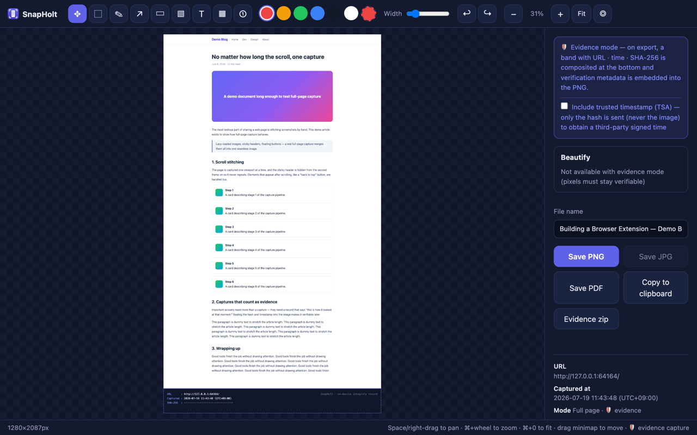
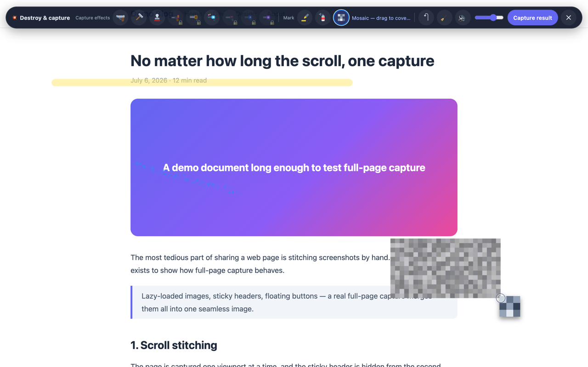

Full-page capture — scroll-stitches the entire page, handling lazy-loaded content, sticky headers, and inner-scrolling documents.
Annotate & export — crop, pen, arrows, highlights, mosaic, numbered badges; export to PNG / JPG / PDF / clipboard, or skip the editor with quick save.
Verifiable records — embeds the URL, capture time, and a SHA-256 pixel hash into the image, with an optional RFC 3161 trusted timestamp and the page's original MHTML. Anyone can verify integrity on the bundled verification page.
Batch capture — paste a list of URLs and get full-page captures as a zip or a single PDF.
💥 Destroy & Capture — compose playful page effects, then save the result as a screenshot.
Scheduled capture & change detection — run hourly, daily, weekly, or once; monitor one or more regions, save only on change, and keep searchable history. Runs locally while Chrome is available.

The editor with a full-page capture — the record band stores URL, time, and hash for later integrity checks.

Destroy & Capture: effects stick to the page; use Capture result to save them.
Privacy
Core capture, editing, schedules, and history run on your device. License activation sends
limited license details to Polar; the optional Trusted Timestamp sends only a capture hash to
freetsa.org. Captured images, MHTML, page contents, and URLs are not sent to Queue1Lab.
Read the full Privacy Policy.
Pricing
Free: unlimited full-page capture and editing, the core Destroy & Capture mode with Capture result and its included basic effects, 3 verifiable records per month, batch up to 3 URLs, and 30 history items. Lifetime (SnapHolt 1.x) — $9.99 one-time, up to 3 devices you own or control: scheduled capture,
local change detection, unlimited records, batch capture and history, plus all additional Destroy & Capture
effect tools. Available for purchase from inside the installed extension. Polar shows the final total
and applicable tax at checkout. Future roadmap features are not included unless explicitly
stated · license terms
Good to know
Scheduled jobs require Chrome and your device to be available and are not a guaranteed 24/7
monitoring service. Local history and settings can be lost if the extension is removed or
browser/device data is reset, so export important records. Verifiable records help check
integrity but do not guarantee legal admissibility · details
Where SnapHolt is headed
SnapHolt is exploring ways to make recurring documentation and verification easier. Capture Recipe — save capture areas, delays, exclusions, and output settings. Short Clip — record a brief active-tab flow and download it as a shareable local clip. Change Timeline — review more precise change history while filtering noise such as ads,
timestamps, and animation.
If demand is validated, SnapHolt Watch may monitor pages even when your browser is
closed and notify you by email or webhook, potentially as a separate service or plan.
Direction, not a promise: features, dates, scope, pricing, and availability may change
based on feedback and validation.
Support
Technical bugs and feature requests:
public GitHub Issues.
Refunds: structured request page.
Other billing, privacy, and license matters:
queue1.dev@gmail.com.
Never post a license key, order ID, private capture, or personal information in a public issue.